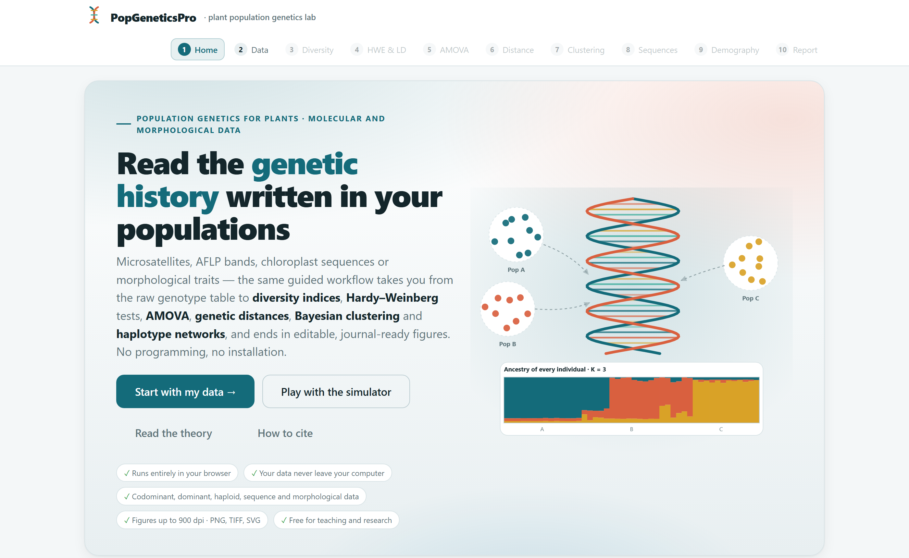
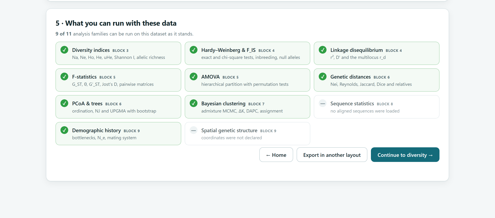
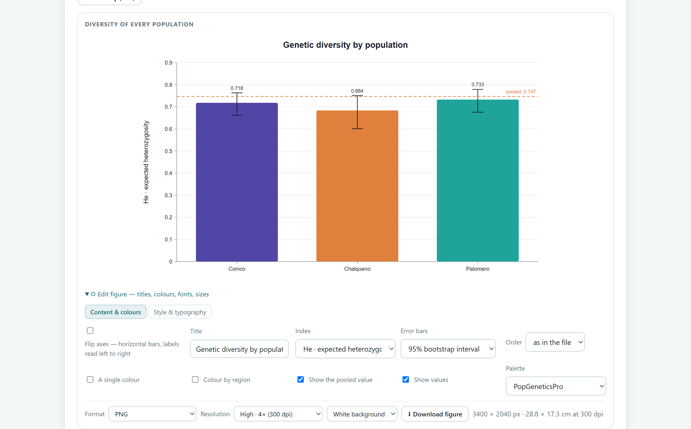
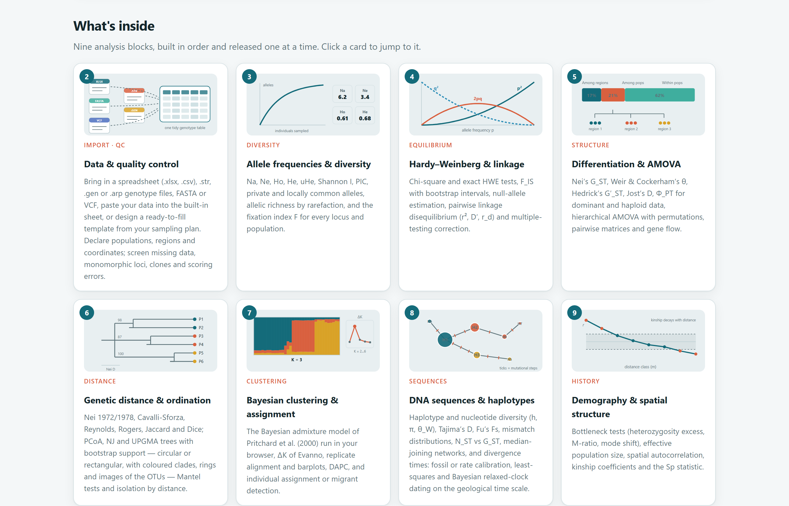

The digital object identifier (DOI) 10.5281/zenodo.22740171 always resolves to the latest version of the software; each version also has its own DOI in the archive record (version 1.0.0, for example, has 10.5281/zenodo.22740172). Source code: https://github.com/luisangelbg/PopGeneticsPro · online version: https://luisangelbg.github.io/PopGeneticsPro/
PopGeneticsPro runs entirely inside your browser. The files you open are read on your computer and are never sent to any server. You can analyse unpublished data, or data covered by confidentiality agreements, with no risk of them leaving your machine.
The illustrations, diagrams and screenshots in this manual are original and were generated with the software itself or with code written for the manual. The example datasets are described in section 1.7; the five-genera dataset is synthetic, and its taxon and fossil names are fictitious.
The manual follows the same order as the app: ten numbered blocks that run from left to right along the top bar. Each chapter explains one block: it opens with a little theory that is easy to digest, describes the indices the block computes and ends with a step-by-step example that uses the data already included in the software.
The colour of each block appears on its chapter opening, in the section numbers, in the theory boxes and in the table of contents, so you can tell at a glance which part of the app you are in.
| Block | Name in the app | What it does |
|---|---|---|
| 1 | Home | Home page, essential theory, simulator and how to cite |
| 2 | Data | File loading, data sheet, templates and quality control |
| 3 | Diversity | Allele frequencies and diversity indices |
| 4 | HWE & LD | Hardy–Weinberg equilibrium, inbreeding, null alleles and linkage |
| 5 | AMOVA | Differentiation among populations and analysis of molecular variance |
| 6 | Distance | Genetic distances, PCoA, trees and isolation by distance |
| 7 | Clustering | Bayesian clustering, DAPC and assignment of individuals |
| 8 | Sequences | DNA sequences, haplotype networks and molecular dating |
| 9 | Demography | Bottlenecks, effective population size, spatial structure and PST |
| 10 | Report | Publication-ready figures and automatic report |
Clarifications and practical tips that save time.
Points that can change your conclusions if they are overlooked.
The idea behind an analysis, without unnecessary formulae.
A real case worked with the data included in the software.
| If the value falls within this range… | then this is the recommended interpretation. |
These are guides to interpretation, not laws: the biological context of your species always takes precedence.
| Written like this | Meaning |
|---|---|
| Compute diversity | A button, check box or menu in the app, with its text exactly as it appears on screen. |
| Edit figure›Style & typography | A path: open the first item, then the second. |
maize_ssr_populations.csv | The name of a file, column or value, to be typed exactly as shown. |
| He, FST, ΦPT | Indices and parameters; their meaning is explained the first time they appear. |
| ● ◐ — | Available · partly available or subject to conditions · not applicable. |
What the software is, which questions it answers, which data it accepts and how to work through it from start to finish. The chapter also covers the basic ideas of population genetics that you need to get the most out of the rest of the manual.
PopGeneticsPro is a platform for analysing the genetic variation of plant populations from the field to the paper: it takes the table that comes out of the laboratory, checks it, computes the classical and modern analyses of population genetics and delivers publication-ready figures and reports.
Everything happens inside the web browser. There is nothing to install, no programming knowledge is required and the data never leave the computer. The same steps work for microsatellites, AFLP or ISSR bands, chloroplast sequences and morphological characters, so you can compare different markers scored on the same material within a single workflow.

1 2 3 4 5 6index.html. It needs neither administrator rights nor an internet connection.| Stage | What you get | Block |
|---|---|---|
| Data input | Reading of spreadsheets (.xlsx, .csv), genotype files (.str, .gen, .arp), FASTA and VCF; a data sheet for pasting; ready-to-fill templates. | 2 |
| Quality control | Missing data, monomorphic loci, clones, coding errors and sample size per population. | 2 |
| Diversity | Na, Ne, Ho, He, uHe, Shannon index, PIC, private alleles, allelic richness and F. | 3 |
| Equilibrium | Hardy–Weinberg tests, FIS with intervals, null alleles and linkage disequilibrium. | 4 |
| Structure | GST, θ, G′ST, Jost’s D, ΦPT, hierarchical AMOVA, pairwise matrices and gene flow. | 5 |
| Relationships | Genetic distances, PCoA, NJ and UPGMA trees with bootstrap, Mantel tests and isolation by distance. | 6 |
| Clustering | Bayesian admixture model, ΔK, DAPC, assignment of individuals and detection of migrants. | 7 |
| Sequences | Hd, π, θW, Tajima’s D, Fu’s Fs, mismatch distribution, haplotype networks and dating with fossils or rates. | 8 |
| History | Bottlenecks, effective population size, spatial autocorrelation, Sp statistic, mating system and PST. | 9 |
| Publication | Editable figures up to 900 dpi (PNG, TIFF, SVG, JPG, WEBP), a full report and a ZIP package with tables and methods. | 10 |
For anyone who studies the genetic diversity of wild or cultivated plants and wants sound results without wrestling with file formats or command lines: undergraduate and graduate students starting out in population genetics, researchers in plant genetic resources and conservation, breeders characterising germplasm, and teachers who need to show in class how drift, gene flow or selection operate. Every result comes with a paragraph that interprets it in plain language, which also makes the app a teaching tool.
A good analysis starts with a biological question. The following table matches the most common questions in a population genetics study with the analysis that answers each one and the block where it is found.
| Question | Analysis that answers it | Block |
|---|---|---|
| Are my data clean and correctly coded? | Summary of missing data, monomorphic loci, clones and inconsistent codes | 2 |
| How much genetic variation does each population hold? | He, rarefied allelic richness, private alleles | 3 |
| Is there inbreeding or selfing? | FIS per locus and population; comparison of Ho with He | 4 |
| Does any locus have null alleles? | Estimated null allele frequency; high FIS at a single locus | 4 |
| Are the populations genetically distinct? | FST, G′ST, Jost’s D, ΦPT with permutation tests | 5 |
| How much of the variation lies among regions, among populations and within populations? | Hierarchical AMOVA | 5 |
| Which materials are most similar to each other? | Genetic distances, PCoA, trees with bootstrap | 6 |
| Are more distant populations more different? | Mantel test and isolation by distance | 6 |
| How many genetic groups are there, without assuming them in advance? | Bayesian clustering with ΔK; DAPC | 7 |
| Are there individuals that come from another population? | Assignment tests and detection of migrants | 7 |
| How are the haplotypes related, and where are they found? | Median-joining haplotype network; NST versus GST | 8 |
| When did the lineages diverge? | Molecular dating with fossils or a substitution rate | 8 |
| Has the population gone through a bottleneck or expanded? | Heterozygosity excess, M ratio, mode shift; Tajima’s D, mismatch distribution | 9 8 |
| How many breeders actually contribute to the next generation? | Effective population size (Ne) | 9 |
| Are close neighbours related? | Spatial autocorrelation, kinship coefficients and Sp statistic | 9 |
| Do morphological characters diverge more than expected from drift alone? | PST compared with neutral FST | 9 |
You do not need any prior coursework to use the app, but these five ideas come up in every chapter. Read them once and come back to them whenever you need to.
A locus (plural loci) is a specific place in the genome: a microsatellite, an AFLP band or a fragment of chloroplast DNA. The variants that exist at that place are the alleles. In a diploid plant each locus has two alleles; if they are identical the individual is homozygous (152/152), and if they differ it is heterozygous (152/158).
The unit of population genetics is not the individual but the frequency of each allele in the population. If allele 152 appears 35 times in 25 diploid plants (50 gene copies), its frequency is p = 35/50 = 0.70. Almost all the indices in the software are calculated from these frequencies.
If a population is large, mates at random and is subject to neither migration, mutation nor selection, genotype frequencies can be predicted from allele frequencies: with two alleles of frequencies p and q, one expects p² homozygotes of one type, 2pq heterozygotes and q² homozygotes of the other. Departures from this baseline are informative: they point to inbreeding, hidden structure or technical problems.
With p = 0.70 and q = 0.30, the expected proportions are 49% homozygotes 152/152, 42% heterozygotes and 9% homozygotes 158/158. If you find only 30% heterozygotes in the field, heterozygotes are lacking. The fixation index measures this deficit:
F = 1 − Ho/He = 1 − 0.30/0.42 = 0.29
A positive value indicates a heterozygote deficit (inbreeding or selfing); a negative value, an excess.
Five processes move populations away from equilibrium. Each leaves a distinct signature on the diversity within populations and on the differentiation among them, and recognising these signatures lies at the heart of interpretation.
| Force | Diversity within | Differentiation among | How to recognise it in your results |
|---|---|---|---|
| Genetic drift chance in small populations | ↓ | ↑ | Small populations with few alleles, loss of rare alleles, high FST unrelated to distance. |
| Gene flow migration of pollen or seed | ↑ | ↓ | Low FST, admixed individuals in Bayesian clustering, migrants detected. |
| Mutation | ↑ | ≈ | Private alleles in old, stable populations; very slow on an ecological time scale. |
| Divergent selection | ↓ at loci under selection | ↑ | One locus or character with much greater differentiation than the rest; PST > FST. |
| Selfing and inbreeding | ↓ heterozygosity | ↑ | Positive FIS, similar across all loci; Ho well below He. |
When a species is divided into populations that exchange few migrants, the total variation is partitioned into two components: the variation that exists within each population and the variation that separates them. Wright’s F-statistics and AMOVA measure this partition. An FST of 0.15, for example, means that 15% of the genetic variation lies among populations and 85% within them.
The first decision in any analysis is to establish what kind of marker you have, because that determines what can be computed. PopGeneticsPro recognises five types and adapts each block to them.
| Type | Examples | Advantage | Limitation |
|---|---|---|---|
| Codominant | Microsatellites (SSR), SNPs, isozymes | Heterozygotes are observed; allows all tests of equilibrium, inbreeding, null alleles, Ne and bottlenecks. | Possible null alleles and allele-sizing errors. |
| Dominant | AFLP, ISSR, RAPD | Many loci at low cost and with no prior knowledge of the genome. | Heterozygotes cannot be distinguished: frequencies are estimated by assuming equilibrium, and there are no Hardy–Weinberg tests. |
| Haploid | Chloroplast or mitochondrial haplotype codes | Inherited from a single parent; ideal for tracing seed dispersal. | A single lineage per individual; less variation than nuclear markers. |
| Sequences | FASTA alignments of cpDNA, ITS, nuclear genes | Provide information on haplotype genealogy, demographic history and divergence times. | An alignment is a single locus; aligned sequences of equal length are required. |
| Morphological | Plant, flower, fruit and seed characters | Reflect the phenotype that matters to breeders and conservationists; allow PST to be estimated. | Influenced by the environment; they do not measure genetic variation directly. |
Declaring the wrong data type changes the results. A 0/1 ISSR matrix read as codominant would yield absurd heterozygosity values. Block 2 detects the type automatically, but it always shows you what it has assumed and lets you correct it before anything is computed.
index.html | The app. Open it with a double click. |
Open PopGeneticsPro.bat | Optional launcher with a local server. |
js/, css/ | The program code. |
data/ | The example files. |
vendor/ | Third-party components and their licences. |
PopGeneticsPro to your computer, for example into Documents. Do not separate index.html from the other folders.index.html. It will open in your default browser, showing the Block 1 home page.Everything works with a double click, but some browsers restrict background processes when the page is opened as a local file. In that case Bayesian clustering and dating still run, although the window may stay busy while they compute. If you work with large studies, use Open PopGeneticsPro.bat: it starts a small server on your own computer (address http://localhost:9000) and opens the app from there. Nothing is sent to the internet in this case either.
The app stores your figure style preferences and the contents of the built-in data sheet in your browser. If you switch browsers or clear your browsing data, those preferences are lost, but your original files are never modified.
All the analysis blocks share the same layout, so you only need to learn it once. From top to bottom, each block has three parts:
| Part | What it contains | How it appears on screen |
|---|---|---|
| 1 · Settings | Analysis options, with default values that follow the most common conventions in the literature, and a button to run the calculation. | 1 · Settings · Compute … |
| 2 · What the numbers say | Cards with the main values, and paragraphs that interpret the results in plain language. | 2 · What the numbers say |
| 3 · Tables and figures | Downloadable tables and editable figures with style and export controls. | Edit figure · Download figure |


1 2 3 4 5 6The app is in English, the language of scientific journals, and its labels are deliberately short. This table gathers the terms you will see in every block, with what each one refers to.
| In the app | What it means | In the app | What it means |
|---|---|---|---|
| Settings | Analysis options | Download | Save a table or figure |
| Compute · Run | Start the calculation | Edit figure | Open the figure editor |
| What the numbers say | Plain-language interpretation | Content & colours | Editor tab for data and colours |
| Population · Region | Grouping levels of the samples | Style & typography | Editor tab for fonts and layout |
| Locus · Loci | Marker(s) analysed | Palette | Colour palette |
| Missing data | Absent genotypes or values | Flip axes | Swap the axes |
| Replicates | Number of repetitions (bootstrap, permutations) | Resolution | Image resolution in dpi |
| Random seed | Starting value of the random number generator | Report | Automatic report |
| Continue to … | Go to the next block | How to cite | Citation of the software |
Analyses that use resampling, permutations or Markov chains depend on chance. The Random seed fixes that chance: with the same seed and the same data you will obtain exactly the same intervals and P values. Record the seed in the methods section of your paper so that others can reproduce your results; the Block 10 report does this for you.
The software includes six ready-to-use datasets. They are embedded in the app, so they load even without a connection, and each one is designed for practising a different data type. The chapter on each block uses them in its step-by-step examples.
| Button in the app | Type | Contents | Blocks for practice |
|---|---|---|---|
| Maize landraces · ISSR | Dominant | 31 ISSR bands in 15 Mexican maize landraces, one bulked sample per landrace. The loci are in rows: the app has to recognise this and transpose the table. | 2 6 10 |
| Maize populations · SSR | Codominant | 8 microsatellites in 3 maize populations (Cónico, Chalqueño and Palomero) of 25 plants each; two columns per locus. | 2 3 4 5 6 7 9 |
| Agave · AFLP | Dominant | 60 AFLP bands in 4 agave populations of 20 plants each, with geographical coordinates. | 2 3 4 5 6 7 9 |
| Pine · chloroplast DNA | Sequences | 48 aligned chloroplast DNA sequences (480 bp) of pine from 4 populations. | 2 5 6 8 |
| Maize · morphology | Morphological | 9 characters measured on the same plants as the microsatellite example. | 2 3 6 9 |
| Five genera · dating with fossils | Sequences | Synthetic: 16 species from five fictitious genera plus an outgroup; 1,600 sites simulated on a tree with known ages and fictitious fossils. | 2 6 8 |

The ISSR matrix of maize landraces comes from a real study and is published with its author’s permission. The microsatellite, AFLP, chloroplast and morphology datasets are realistic simulations created for teaching, and the five-genera dataset is entirely synthetic, with known true ages so that the dating can be checked.
The blocks are arranged in the order in which a study is carried out: first the quality of the data is ensured, then diversity is described, assumptions are checked, structure is measured and, finally, history is interpreted. Each data type follows its own route through this sequence, like metro lines that stop at only some of the stations.
| Type | 3 | 4 | 5 | 6 | 7 | 8 | 9 | Conditions |
|---|---|---|---|---|---|---|---|---|
| Codominant | ● | ● | ● | ● | ● | — | ● | Blocks 4 and 5 require more than one individual per population; Block 9, at least 10 individuals per population or coordinates. |
| Dominant | ● | ◐ | ● | ● | ● | — | ◐ | No Hardy–Weinberg tests (linkage only); in Block 9, spatial structure only, if coordinates are available. |
| Haploid | ● | ◐ | ● | ● | ● | — | ◐ | As for dominant markers; clustering requires at least three polymorphic loci. |
| Sequences | ◐ | — | ● | ● | — | ● | ◐ | An alignment is a single locus: no linkage analysis or Bayesian clustering. Dating requires at least three sequences. |
| Morphological | ● | — | — | ● | — | — | ◐ | Phenotypic diversity per character; in Block 9, PST for each quantitative character. |
| Size per population | Interpretation | What to do |
|---|---|---|
| 25 to 30 or more | Adequate | Sufficient to estimate allele frequencies reliably with microsatellites (Hale et al., 2012). All analyses are dependable. |
| 10 to 24 | Acceptable, with caution | Compare diversity using rarefied allelic richness rather than the raw number of alleles, and report confidence intervals. |
| 5 to 9 | Limited | Rare alleles are lost and FIS values are unstable. Use such samples for description, not for precise comparisons between populations. |
| Fewer than 5 | Insufficient | The app flags this in quality control. Consider pooling neighbouring populations or restricting the analysis to distances and ordination. |
With dominant markers, more plants and more polymorphic bands are advisable, because each band carries less information than a microsatellite.
Although you can move freely between blocks, check Block 4 before interpreting Blocks 5 and 7. A locus with null alleles or a strongly inbred population distorts FST and Bayesian clustering. Block 5 lets you exclude the suspect loci that Block 4 detects.
Almost every block reports P values and confidence intervals. Understanding them properly avoids the two most common mistakes: believing that a non-significant result proves there is no effect, and believing that a significant one is necessarily important.
It is the probability of observing a result at least as extreme as yours if there were in fact no effect. A P of 0.003 in a Hardy–Weinberg test means that, if the population were in equilibrium, a heterozygote deficit like this would arise by chance 3 times in 1,000.
It is the range of values compatible with your data. If the 95% interval for FIS runs from 0.08 to 0.21, inbreeding is real and moderate. If it runs from −0.05 to 0.30, the data cannot distinguish between no inbreeding and strong inbreeding.
| P value | Evidence against the null hypothesis | How to word it |
|---|---|---|
| P < 0.001 | Very strong | “The departure is highly significant”. |
| 0.001 ≤ P < 0.01 | Strong | “The departure is significant”. |
| 0.01 ≤ P < 0.05 | Moderate | “There is evidence of a departure”; confirm it with other loci or populations. |
| P ≥ 0.05 | Insufficient | “No departure was detected”. Do not claim that the population is in equilibrium: the test may have lacked statistical power. |
Always report the exact P value and the effect size (for example, FIS with its interval), not just whether the result is significant.
With large amounts of data, tiny differences become significant. An FST of 0.01 can have P < 0.001 with hundreds of plants and yet indicate populations that exchange migrants frequently. Always ask yourself whether the magnitude matters for your species and your objective, not just whether the P value is small.
With these foundations you are ready to work through the blocks. The next chapter presents the app’s home page, its built-in theory and the simulator, a quick way to see the forces described in section 1.3 in action.